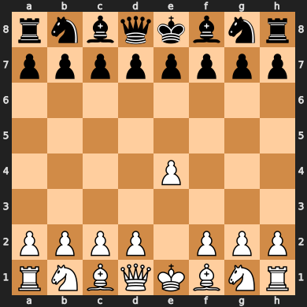
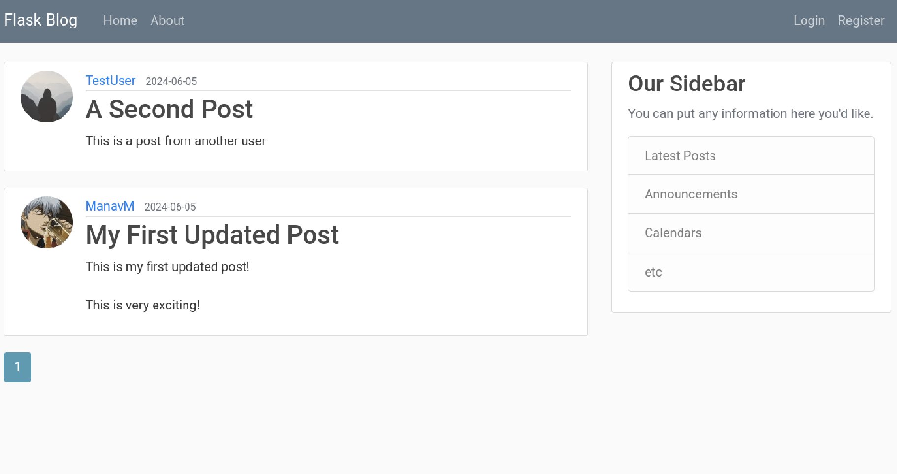

I am a Data Scientist with a passion for solving real-world problems using data-driven approaches and innovative algorithms. I enjoy working on neural networks, data analysis, and building AI solutions that make a tangible impact.
I am a highly motivated and inquisitive Data Scientist with a passion for exploring innovative solutions through technology. Currently, I am pursuing my Master`s in Data Science at Friedrich Alexander Universität Erlangen Nürnberg, majoring in Machine Learning and Artificial Intelligence with a minor in Biomedical AI.
My technical expertise includes Python, PyTorch, and SQL, and I am skilled in designing user interfaces and leveraging machine learning frameworks to create impactful projects. I am deeply motivated by opportunities to work on challenging problems, particularly in AI and neural networks, to drive meaningful outcomes.
Previously, I gained hands-on experience through internships, including developing an AI chatbot during my tenure at Jio Platforms, analyzing Kaggle datasets at Stickman Services and crafting a carpool application at Reliance Industries.
During my leisure time I like to read research papers on innovations in AI/ML, read fiction novels and play tennis.

A machine learning-based chess engine designed to play chess using a neural network for move prediction.
Check it Out
This project demonstrates a Deep Q-Network (DQN) agent trained to play the Atari game Breakout.
Check it Out
A dynamic blog application built with Flask, featuring user authentication, post management (create, update, delete), and a responsive user interface. Supports a clean, intuitive user experience while demonstrating my proficiency in backend development, form handling, and integrating various web technologies.
Check it Out